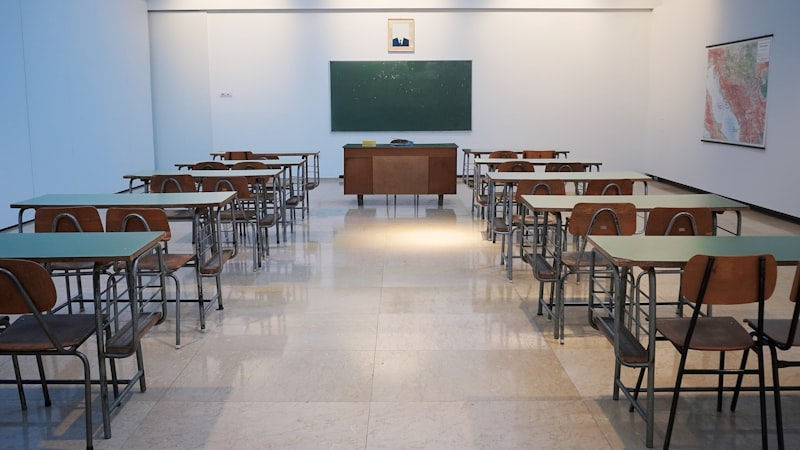

개념 정리는 다 했습니다. 그런데 표가 붙은 문제에서 멈춥니다. 용어를 물으면 대답하는데, 같은 내용이 그래프나 지도로 나오면 어디를 봐야 할지 몰라 헤맵니다. 삼척에서 고1 사회과외 상담을 받을 때 자주 보게 되는 모습입니다. 개념을 모르는 게 아니라, 개념과 자료를 이어 본 적이 없을 뿐입니다.
자료 문제에서 벌어지는 일
- 숫자부터 읽습니다 — 표 안의 값을 먼저 보면 무엇을 비교하라는 표인지 모른 채 숫자에 끌려다닙니다. 읽는 순서는 제목 → 가로·세로 항목 → 단위 → 값입니다.
- 선지와 자료를 따로 봅니다 — 자료를 한 번 보고 선지를 읽고 다시 자료로 돌아가면 시간이 두 배로 듭니다.
- 배운 개념을 떠올리지 않습니다 — 사회 자료는 대개 수업에서 배운 개념 하나를 숫자로 보여 주는 것입니다. 개념 이름을 먼저 떠올리면 볼 곳이 줄어듭니다.
자료를 한 문장으로 바꾸는 세 단계
순서는 하나입니다. 선지를 보기 전에 자료를 내 말 한 문장으로 요약하는 것입니다.
- 1단계 · 제목과 항목만 읽습니다 — 값은 아직 보지 않습니다. "무엇을 무엇끼리 비교한 자료"인지만 확정합니다. 단위(%, 만 명, 원)도 이때 확인합니다.
- 2단계 · 가장 큰 변화 하나만 찾습니다 — 모든 값을 비교하지 않습니다. 가장 늘어난 쪽, 가장 줄어든 쪽, 뒤집힌 지점 중 하나만 짚어 여백에 화살표로 적습니다.
- 3단계 · 개념 이름을 붙여 한 문장으로 적습니다 — "A가 늘고 B가 줄었다, 이건 수업에서 배운 ○○이다"까지 써 두면, 선지를 읽을 때 그 문장과 다른 말을 하는 선지가 바로 걸립니다.
지도 자료도 같습니다. 범례를 먼저 읽고, 가장 진한 곳과 가장 옅은 곳 두 군데만 짚은 뒤 그 차이에 개념 이름을 붙입니다. 서술형에서는 이 한 문장이 답안의 첫 줄이 됩니다.
2학기 중간고사까지 주차별로
- 1주차 — 교과서와 수업 자료에 실린 표·그래프만 골라 한 문장 요약을 적습니다. 문제는 아직 풀지 않습니다
- 2주차 — 틀린 문제를 '개념을 몰라서'와 '자료를 잘못 읽어서'로 나눕니다. 뒤쪽이 많으면 지금 방식이 맞습니다
- 3주차 — 요약 문장만 보고 개념 이름을 되짚습니다. 자료를 다시 보지 않고도 떠오르는지 확인합니다
- 마지막 주 — 시간을 재고 한 세트를 풉니다. 자료마다 한 문장을 적으면서도 시간이 되는지 확인합니다
시험 범위와 서술형 비중, 과목 편성은 학교와 학년마다 다릅니다. 정확한 내용은 학교에서 안내하는 평가 계획을 확인하시는 것이 가장 정확합니다.
삼척은 화상 수업으로 진행합니다
솔직하게 말씀드리면, 현재 강원 삼척으로 직접 찾아갈 수 있는 선생님은 없습니다. 대신 화상 수업이 가능한 선생님이 673명 있고, 이분들은 지역 제한 없이 전국 어디서나 수업합니다. 사회는 화상이 특히 불리하지 않은 과목입니다. 표와 그래프를 화면에 같이 띄워 놓고 선생님이 어디를 보고 있는지 그 자리에서 짚어 주기 때문에, 자료 읽는 순서를 잡는 데는 오히려 편합니다. 삼척은 시내와 도계·원덕 쪽이 서로 멀어서 저녁에 한 번 오가는 것만으로 공부 시간이 통째로 빠지는데, 화상 수업에는 그 이동이 없습니다.
💡 티칭코칭은 강원 삼척 삼척고등학교 학생에게 맞춘 1:1 고1 사회과외를 화상으로 제공합니다. 상담은 무료입니다.
👉 삼척고등학교 학교별 과외 안내 · 삼척 지역 과외 안내 · 동해 지역 안내